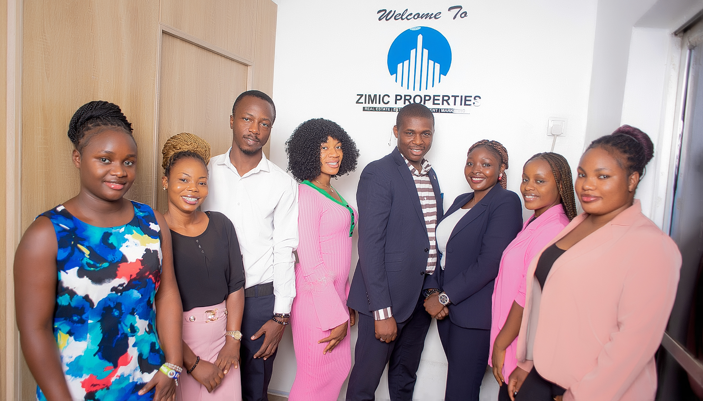
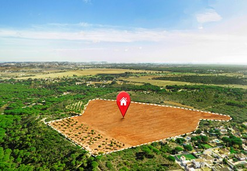

<!DOCTYPE html>
<html lang="zxx">
  <head>
    <meta charset="utf-8" />
    <meta http-equiv="X-UA-Compatible" content="IE=edge" />
    <meta
      name="viewport"
      content="width=device-width, initial-scale=1, maximum-scale=1"
    />
    <title>Z I M I C</title>
    <link rel="shortcut icon" href="img/ZIMIC LOGO.png" />
    <link rel="stylesheet" href="css/plugins.css" />
    <link rel="stylesheet" href="css/style.css" />
  </head>

  <body data-spy="scroll" data-target=".navbar" data-offset="50">
    <!-- Preloader -->
    <div class="preloader-bg"></div>
    <div id="preloader">
      <div id="preloader-status">
        <div class="preloader-position loader"><span></span></div>
      </div>
    </div>
    <!-- Progress scroll totop -->
    <div class="progress-wrap cursor-pointer">
      <svg
        class="progress-circle svg-content"
        width="100%"
        height="100%"
        viewBox="-1 -1 102 102"
      >
        <path d="M50,1 a49,49 0 0,1 0,98 a49,49 0 0,1 0,-98" />
      </svg>
    </div>
    <!-- Sidebar Section --><a
      href="#"
      class="js-bauen-nav-toggle bauen-nav-toggle"
      ><i></i
    ></a>
    <aside id="bauen-aside">
      <!-- Logo -->
      <div class="bauen-logo">
        <a href="index.html">
          
          <h2>ZIMIC<span>PROPERTIES</span></h2>
        </a>
      </div>
      <!-- Menu -->
      <nav class="bauen-main-menu">
        <ul>
          <li><a href="index.html#home">Home</a></li>
          <li><a href="index.html#about">About</a></li>
          <li><a href="index.html#projects">Estates</a></li>
          <li><a href="index.html#services">Services</a></li>
          <li><a href="index.html#contact">Contact</a></li>
        </ul>
      </nav>
      <!-- Sidebar Footer -->
      <div class="bauen-footer">
        <ul>
          <li>
            <a
              href="https://www.instagram.com/zimic_properties?utm_source=ig_web_button_share_sheet&igsh=ZDNlZDc0MzIxNw=="
              ><i class="ti-instagram"></i
            ></a>
          </li>
        </ul>
      </div>
    </aside>
    <!-- Main -->
    <div id="bauen-main">
      <!-- Content -->
      <div class="content-wrapper">
        <!-- Lines -->
        <section class="content-lines-wrapper">
          <div class="content-lines-inner">
            <div class="content-lines"></div>
          </div>
        </section>
        <!-- Header Banner -->
        <section
          class="banner-header banner-img valign bg-img bg-fixed"
          data-overlay-darkgray="5"
          data-background="img/banner.jpg"
        ></section>
        <!-- Projects Page -->
        <section class="section-padding2">
          <section id="about" class="about section-padding">
            <div class="container">
              <div class="row">
                <div
                  class="col-md-6 mb-30 animate-box"
                  data-animate-effect="fadeInUp"
                >
                  <h2 class="section-title">About <span>ZIMIC</span></h2>
                  <p>
                    At Zimic properties estate, we believe that everyone
                    deserves access to affordable lands ( land banking , and
                    land retailing), quality housing. Founded with a vision to
                    make real estate affordable, we have established a strong
                    reputation for excellence in customer service and a deep
                    understanding of the real estate market.
                  </p>
                  <p>
                    Our mission is to provide affordable housing solutions that
                    cater to the diverse needs of our clients, ensuring
                    exceptional service and satisfaction. We uphold values of
                    integrity, customers focus, excellence, and community,
                    striving to positively impact the neighborhoods we serve.
                  </p>
                  <p>
                    Our dedicated team, led by experienced professionals, is
                    here to guild you through every step of your real estate
                    journey.
                  </p>
                </div>
                <div
                  class="col-md-6 animate-box"
                  data-animate-effect="fadeInUp"
                >
                  <div class="about-img">
                    <div class="img">
                      
                    </div>
                    <!-- <div class="about-img-2 about-buro">Canada Office</div> -->
                  </div>
                </div>
              </div>
            </div>
          </section>
          <div class="container">
            <div class="row">
              <div class="col-md-12">
                <h2 class="section-title2">Why You Haven't Bought Land Yet</h2>
              </div>
            </div>
            <div class="row">
              <div class="col-md-8">
                <p>
                  Humble would never forget the day his friend John told him he
                  was buying a plot of land. They were out grabbing drinks,
                  celebrating John’s recent promotion, when he casually dropped
                  the news.
                </p>
                <p>
                  “Two plots in Karsana? No way, how do you manage that?” Humble
                  asked, shocked. That area was hot real estate, known for its
                  fast appreciation. John had always talked about wanting to
                  build his family’s dream home there someday.
                </p>
                <p>
                  “I’ve been saving up for years, and the opportunity just fell
                  into my lap. The price was too good to pass up,” John said
                  with a grin.
                </p>
                <p>
                  Humble nodded, trying to hide his envy. For years, he had been
                  meaning to get serious about buying land himself. He wanted
                  that same security and investment potential that came with
                  property ownership. But somehow, it just never seemed to be
                  the right time.
                </p>
                <p>
                  “You know, I’ve been thinking about it too, but I just haven’t
                  pulled the trigger yet,” Humble admitted.
                </p>
                <p>
                  John gave him a skeptical look. “What’s holding you back, man?
                  I know the market is crazy, but if you keep waiting, you’re
                  going to miss your chance.”
                </p>
                <p>
                  He was absolutely right. As Humble thought about it, he
                  realized there were a few key reasons why he, and so many
                  others, still had not become landowners despite it being a
                  longheld goal.
                </p>
                <p>
                  Don’t make the same mistakes Humble did – read on to learn
                  what’s really holding you back from investing in Nigerian real
                  estate.
                </p>
                <p>
                  I am waiting for the ‘perfect’ opportunity You know the
                  saying, “perfect is the enemy of good”? Well, that mentality
                  is killing your chances of land ownership.
                </p>
              </div>
            </div>
            <div class="row mt-30">
              <div class="col-md-6 gallery-item">
                <a
                  href="img/slider/1.jpg"
                  title="Architecture"
                  class="img-zoom"
                >
                  <div class="gallery-box">
                    <div class="gallery-img">
                      
                    </div>
                  </div>
                </a>
              </div>
            </div>
            <div class="row">
              <div class="col-md-8">
                <p>
                  In the fast-paced Nigerian property market, waiting for the
                  best plot in the best location at the best price point means
                  you’ll likely be waiting forever.
                </p>

                <p>
                  Instead of getting caught up in finding perfection, focus on
                  what’s available in your budget and target area.
                  Less-than-ideal can still be a smart investment, especially if
                  you plan to hold the land long-term. An imperfect plot today
                  is better than no plot at all.
                </p>

                <p>
                  <strong>I am scared I will make the wrong choice.</strong>
                </p>

                <p>
                  It’s understandable to have fears about such a big financial
                  decision. The reality is, there’s no way to know with 100%
                  certainty that you’re making the “right” choice. But working
                  with a reputable real estate company such as Zimic Properties
                  Ltd, doing your research, and trusting your gut can go a long
                  way. And remember – land is generally a stable, appreciating
                  asset. Even if the specific plot you choose isn’t your dream
                  location, it will likely increase in value over time.
                </p>

                <p>
                  <strong
                    >I am waiting until I have more money saved up.</strong
                  >
                </p>

                <p>
                  We get it – buying land is a major expense. But waiting until
                  you have your entire budget squared away could mean missing
                  out on opportunities.
                </p>

                <p>
                  Instead, make a plan to save what you can each month towards
                  your land purchase. Even if it’s a smaller plot or in a
                  slightly less prime area, getting your foot in the door is the
                  important first step. You can always upgrade to a
                  bigger/better plot down the line as your financial situation
                  improves. Besides, with Zimic Properties Ltd, you don’t even
                  need to have so much saved up, we have easy flexible plans
                  that are perfect for you.
                </p>

                <p>
                  <strong
                    >I am just too busy with other priorities right now.</strong
                  >
                </p>

                <p>
                  Between work, family, and social commitments, finding the time
                  to research, evaluate, and purchase land can feel impossible.
                  But the truth is, the “perfect” time will never come.
                </p>

                <p>
                  Start by taking off a few hours each week to dedicate to your
                  land search. Enlist the help of a trusted real estate brand
                  like Zimic Properties Ltd who can do a lot of the legwork for
                  you. And remember – this investment is about your long-term
                  future, not just your current lifestyle. Making time for it
                  now will pay off immensely later.
                </p>
              </div>
            </div>
            <div class="row mt-30">
              <div class="col-md-6 gallery-item">
                <a
                  href="img/slider/1.jpg"
                  title="Architecture"
                  class="img-zoom"
                >
                  <div class="gallery-box">
                    <div class="gallery-img">
                      
                    </div>
                  </div>
                </a>
              </div>
            </div>
          </div>
        </section>

        <!-- Footer -->
        <footer class="main-footer dark">
          <div class="container">
            <div class="row">
              <div class="col-md-4 mb-30">
                <div class="item fotcont">
                  <div class="fothead">
                    <h6>Phone</h6>
                  </div>
                  <p>+234 80 397 223 95</p>
                </div>
              </div>
              <div class="col-md-4 mb-30">
                <div class="item fotcont">
                  <div class="fothead">
                    <h6>Email</h6>
                  </div>
                  <p>zimicproperties@gmail.com</p>
                </div>
              </div>
              <div class="col-md-4 mb-30">
                <div class="item fotcont">
                  <div class="fothead">
                    <h6>Our Address</h6>
                  </div>
                  <p>Suite A55 Efab Extension, Area 11, Garki, FCT-Abuja</p>
                </div>
              </div>
            </div>
          </div>
          <div class="sub-footer">
            <div class="container">
              <div class="row">
                <div class="col-md-4">
                  <div class="text-left"></div>
                </div>
                <div class="col-md-4 abot">
                  <div class="social-icon">
                    <a
                      href="https://www.instagram.com/zimic_properties?utm_source=ig_web_button_share_sheet&igsh=ZDNlZDc0MzIxNw=="
                      ><i class="ti-instagram"></i
                    ></a>
                  </div>
                </div>
                <div class="col-md-4"></div>
              </div>
            </div>
          </div>
        </footer>
      </div>
    </div>
    <!-- jQuery -->
    <script src="js/jquery-3.6.3.min.js"></script>
    <script src="js/jquery-migrate-3.0.0.min.js"></script>
    <script src="js/modernizr-2.6.2.min.js"></script>
    <script src="js/imagesloaded.pkgd.min.js"></script>
    <script src="js/jquery.isotope.v3.0.2.js"></script>

    <script src="js/popper.min.js"></script>
    <script src="js/bootstrap.min.js"></script>
    <script src="js/scrollIt.min.js"></script>
    <script src="js/smooth-scroll.min.js"></script>
    <script src="js/jquery.waypoints.min.js"></script>
    <script src="js/owl.carousel.min.js"></script>
    <script src="js/jquery.stellar.min.js"></script>
    <script src="js/jquery.magnific-popup.js"></script>
    <script src="js/YouTubePopUp.js"></script>
    <script src="js/before-after.js"></script>
    <script src="js/custom.js"></script>
  </body>
</html>
